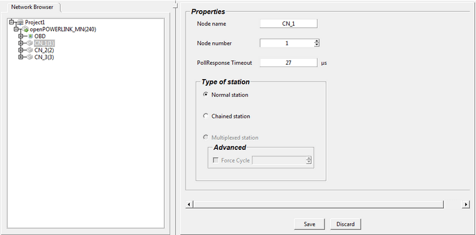

Editing MN Properties
The user can view and edit the following clicking a MN node from Network browser
Name of the managing node
Cycle time : value of the object 1006
Loss of SoC Tolerance : value of the object 1C14
Asynchronous MTU size : value of the Object 1F98 SubObject 08
Asynchronous Timeout : value of the object 1F8A SubObject 07
Multiplexing prescaler : value of the Object 1F98 SubObject 07. This value can be edited only if the MN supports multiplexing feature. Multiplex cycle assigned for CN cannot exceed this value. When the Multiplexing prescaler is changed with lesser than the previous value the automatically assigned multiplex cycle values of CNs are recalculated. When this value is set to zero the multiplexed station for the CN will be disabled.
The user can view and edit the following clicking a CN node from Network browser
Node Name
Node Number
Poll Response Timeout : value of Object 1F92 at MN Subobject node number of CN. The value entered cannot be less than default value of Object 1F98 Subobject 03
The user also can can switch three stations
Normal Station
Chained station : This option is enabled only when both MN and the CN supports the Chaining feature.
Multiplex station : This option is enabled only when both MN and the CN supports the Multiplexing feature and the multiplex prescaler should be greater than zero.
